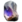

Pustka
- Wpis w Kodeksie - Pierwotnie badaliśmy zdarzenia Pustki z bezpiecznej odległości, obserwowaliśmy i katalogowaliśmy rozkład galaktyk, udoskonalaliśmy kosmologiczne modele ewolucji. Znajdujemy się w nowej erze kosmicznej eksploracji. Postępy w podróżach międzygwiezdnych idące w parze z determinacją i ciekawością sprawiły, że mocno zbliżyliśmy się do obiektu naszych badań, a co się z tym wiąże... do oświecenia.
- Surowce które występują na planecie:
 Ferryt
Ferryt Rubedo
Rubedo-  Kryształ Argonowy
 Moduł Sterujący
Moduł Sterujący
- Występujący boss: Skażony Vor
Fakcje i typy wrogów
- Skażony Starożytny
- Skażony Rzeźnik
- Skażony Załogant
- Skażona Ciężkozbrojna
- Skażony Szturmowiec
- Skażony MOA
- Dron Orokin
- Skażony Kanonier
- Niwelujący Skażon